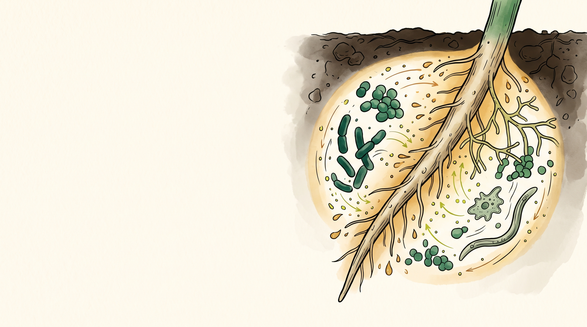
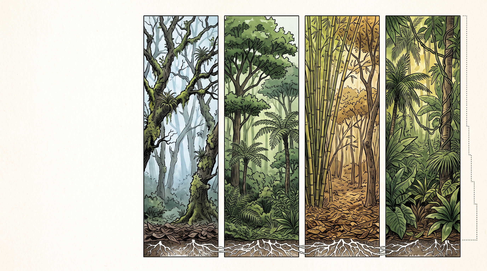
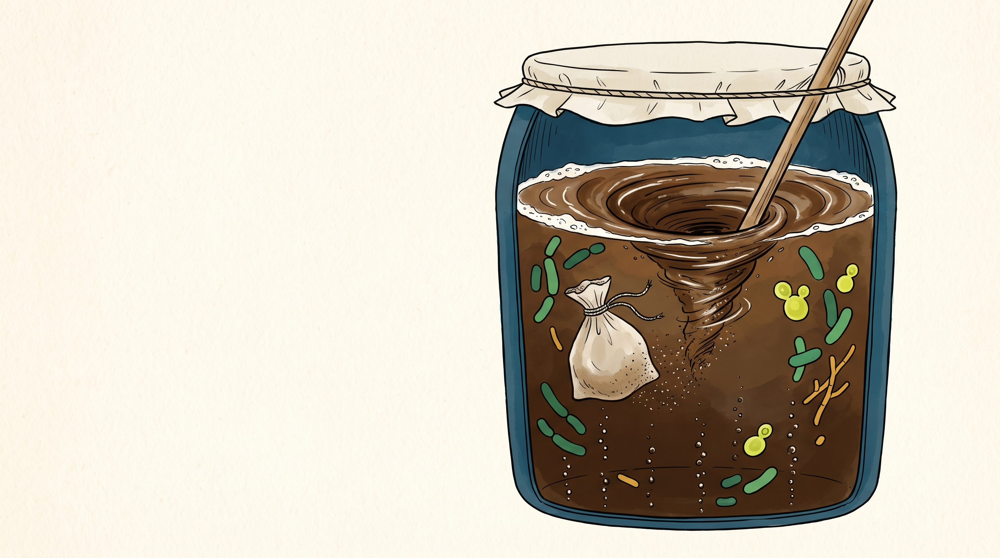

El bosque es
el donante
Microbiota, equilibrio biológico y resiliencia.
Dijimos que el clima
de tu predio se siembra.
Falta la pregunta incómoda: ¿quién hace el trabajo de nutrir? Los árboles ponen la casa. El trabajo lo hacen los que viven debajo, y no se ven.
Los 7 principios de
inmunidad del bosque
Este es el principio que más baja la factura de insumos, y el único que se puede empezar este fin de semana con un balde y una bolsa.
Tres cosas que te llevas hoy
El suelo es un
sistema vivo.
Todavía hay facultades que lo enseñan como un soporte físico al que hay que cargarle sales. Todo lo que sigue en esta hora contradice eso.

Una cucharadita de buen suelo
millonesde bacterias invisibles.
metrosde hifas fúngicas.
En una cucharadita. Ahora multiplica por tu hectárea.
La red trófica del suelo


La planta pide
y el microbio entrega
La planta fabrica azúcares en la hoja y los exuda por la raíz. Con ellos paga. Los microorganismos cobran en carbono y devuelven exactamente el nutriente que les están pidiendo, guiados por moléculas de señal.
Por eso en un bosque, donde nadie fertiliza, no hay deficiencias nutricionales.
Los cuatro gremios del equipo
Saprófitos que digieren lignina y celulosa, y convierten lo muerto en humus.
Capturan N₂ y lo entregan como amonio, a presión y temperatura ambiente.
Liberan ácidos que desbloquean fósforo y minerales que ya están en tu suelo.
Hongos que multiplican miles de veces el alcance de la planta y le traen agua.
Los esparcidores de fertilizante

Lo que hacen las lombrices gratis
Voltean el suelo dos veces al año sin tractor, sin gasolina y sin romper una sola hifa. El arado hace lo contrario de las dos cosas.
Si el mercado está lleno,
el patógeno no encuentra
dónde pararse.
La inmunidad del bosque se construye ocupando el territorio. Es un asunto de ocupación, no de sustancias.
Exclusión competitiva


Las cinco maneras de matarlo
- Labranza: corta las hifas y mata las micorrizas.
- Fungicidas: matan el hongo benéfico y el patógeno por igual.
- Herbicidas: sin plantas que exuden, no hay comida.
- Fertilizantes solubles: son sales. Deshidratan y matan.
- Suelo desnudo: la comunidad entra en disbiosis.
Las cinco son decisiones de manejo. Ninguna es un accidente.
Las reglas del jardinero


Si tu finca es el paciente,
el bosque es el donante.
Es un trasplante de microbiota en toda regla: vas al bosque nativo más cercano, recoges la comunidad completa y la reproduces por millones en un tarro.
Por qué el bosque de al lado
le gana al frasco importado
Mismo clima, misma altitud, mismo suelo, mismas lluvias. Esa comunidad lleva siglos resolviendo exactamente tus condiciones.
Unas pocas cepas seleccionadas en otro clima, que llegan a competir contra una población local que conoce el terreno mejor que ellas.
Y el bosque no cobra.

Cómo elegir tu bosque donante
- Tu mismo piso térmico. El mantillo de un robledal a 2.600 m trae otra comunidad que la de un bosque seco a 900 m. Recoge lo más cerca posible de tu altura.
- Bosque nativo. Una plantación de pino o eucalipto tiene una comunidad empobrecida y acidificada.
- Lejos de fumigaciones y de carretera transitada.
- Al pie de los árboles más grandes, donde la capa blanca bajo la hojarasca es más gruesa.
- Con el bosque en seco. Después de días de lluvia el mantillo llega encharcado y la mezcla se pudre.
¿Y si no tengo bosque cerca?
Un guadual de más de diez años acumula una hojarasca espesa y una comunidad muy rica.
Si lleva años sin fungicidas y tiene árboles grandes encima, sirve bien.
La franja bajo una cerca de árboles viejos nunca se aró ni se fumigó. Es un bosque en miniatura.
Debajo del árbol que nadie ha tocado en treinta años hay más vida de la que imaginas.
Entre más viejo y menos intervenido el sitio, mejor el donante. La distancia importa menos que la historia del suelo.
El equipo completo

Un millón de millones de unidades formadoras de colonia por gramo: bacterias, hongos, levaduras y actinobacterias, todas nativas de tu zona.
Fijan nitrógeno, solubilizan fósforo, forman humus y micorrizas, desintoxican el suelo, activan las defensas de la planta y capturan agua que la raíz sola no alcanzaría.

Tres pasos y 28 días
La capa blanca bajo la hojarasca, al pie de los árboles grandes. Guantes y cuidado con lo que vive ahí abajo.
Hasta color oscuro parejo y el punto de la prueba del puño: la masa se agrega pero no gotea.
Pisón para sacarle todo el aire, tapa hermética, fecha marcada. Y no se abre hasta cumplido el mes.
El paso a paso completo está en el video del lunes. Cerrado, el tarro dura años.
La práctica completa, paso a paso
Recolección del mantillo, mezcla, empaque y aplicación en finca. Vuelve a verlo con las manos en la mezcla: se entiende distinto.
De sólido
a líquido
El mantillo ya está en el tarro. Con 5 kg de ese sólido salen 200 litros de inóculo. La pregunta ahora es cuánto aire le das, porque eso decide qué microbios crías.
El interruptor del oxígeno

Una carrera contra el pH

Búnker, sprint o equilibrio
Tanque sellado con válvula de agua. Dominan lactobacilos y levaduras, pH bajo 4. Dura meses. Para limpieza de cintas, olores y ensilaje.
Bomba de aire permanente. Máxima diversidad, pH neutro. Se aplica el mismo día o se vuelve tóxico.
Tapa de tela y agitación manual, 10 minutos mañana y tarde. Bacterias, hongos y levaduras a la vez. Es el que usamos.
Matriz de decisión

¿Leche o no?

Protocolo maestro · 200 litros

El ciclo de 8 días


Por qué se cosecha
el día 8
Es el momento en que bacterias, hongos y levaduras todavía conviven, justo antes de que la exclusión competitiva empiece a borrar diversidad.
Ya bajó lo suficiente para estabilizar el líquido, y todavía no lo suficiente para eliminar la carga bacteriana benéfica. Un día antes está vivo pero inestable; una semana después es otro producto.
Dosis por uso
| Uso | Dilución | Frecuencia | Vía |
|---|---|---|---|
| Hortalizas · riego | 1:20 o puro en fertirriego | Cada 8 a 15 días | Al suelo |
| Hortalizas · foliar | 1 a 5 % | Semanal | Aspersión al atardecer |
| Frutales y perennes | 20 L/ha | Mensual o bimestral | Al suelo, tras poda o cosecha |
| Pastos en rotación | 1:10 | En cada rotación | Apenas salen los animales |
| Recuperación de suelos | Puro | Dosis masiva inicial | Al suelo |
Nunca a pleno mediodía: la radiación ultravioleta mata lo que acabas de criar. Y si tu agua es de acueducto, déjala destapada 24 horas antes de usarla.
Señales de alarma


La vida ya existe
al lado. Solo hay que
mudarla de casa.
El bosque más cercano a tu finca tiene la comunidad que tu suelo perdió. La recoges en una bolsa, la multiplicas en un tarro y en 28 días la estás aplicando por hectáreas.
Ubica tu bosque donante
y haz tu primera recolección.
- Dónde queda, a qué altura está y cuánto tardas en llegar.
- Una foto del mantillo levantado, con la capa blanca a la vista.
- Los 4 kg recogidos y la fecha en que sellaste el tarro.
Marca esa fecha en el calendario: a los 28 días tienes el inóculo listo, justo cuando vamos en el Principio 5.
Sube la foto al hilo de la semana en la comunidad · antes del próximo miércoles
Principio 3 · Reciclaje de nutrientes
Nutrimos suelo
Los videos se liberan el lunes: compost, biochar y bocashi, cada sistema por separado, con la preparación y el manejo en campo.
Ve mirando cuánto estiércol tienes disponible al mes. De ese número sale el tamaño de tu biofábrica.